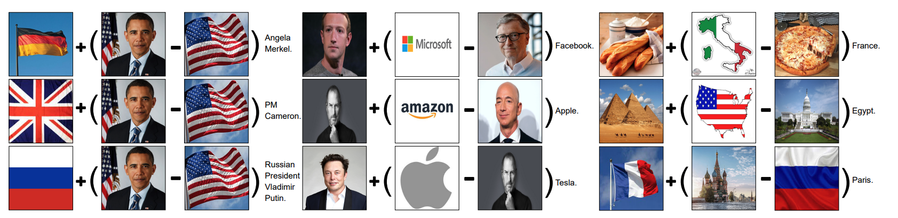
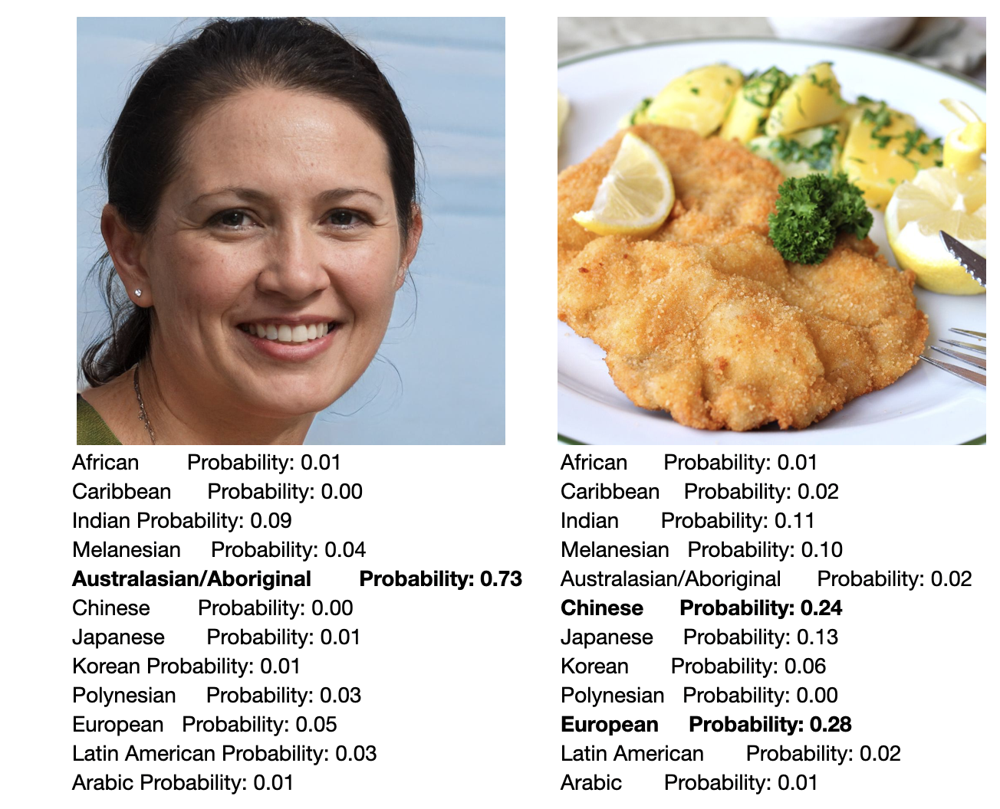

Part of our journey in pursuing the purple cause was to experiment on a infamous model released by OpenAI: CLIP1 (Contrastive Language–Image Pre-training), which is a key component in most AI models that enables image generation with a textual prompt. CLIP was trained to score how well an image matches a caption; it learned a joint text-image space where each caption and image pair that make sense would have high similarity. In practice, given any combination of text and image, CLIP could calculate their similarities. In other words, it measures the distances between the respected image and text. The closer they are, the more similar they are considered to be.
One could argue that much meaning is lost in mathematical representations, but there is a poetic notion to me that any given image and text are bridges between machine learning systems like CLIP. The system functions not through a shared meaning in the human sense but through a learning of proximity. CLIP processes both text and image by encoders (a vision transformer4 for the image and a text transformer for the language) and projects them into shared latent space. The process is called embedding, and the space allows semantics to be measured as cosine similarity between high dimensional vectors. This embedding structure allows the model to link visual and linguistic modalities without direct physical reference.
The index here is statistical, and the trace is encoded not in materials but in the geometry of representations. An image doesn't refer to a specific object in the real world. Instead, it is represented in a location in latent space based on patterns in the training dataset. That location represents a kind of memory accumulated from millions of image-text pairs. Unlike analog indexicality, which relies on causal contact, this embedding link is abstract, but it still carries real consequences. How an image is represented and what it connects to depends entirely on the training data (data bias) and the design of the model (algorithmic bias). CLIP does not see in a human sense, but it operates similarly through numerical proximity. This creates a form of meaning based on correlation, not causality.
We put this model to the test with a series of experiments. We began searching for the "happiest person" with CLIP by running an iterative loop on faces generated by ThisPersonDoesNotExist2. After hundreds of cycles, we arrived at a face that simply scored highest on the word "happy." Not because the face was happy in any meaningful way but because it aligns with that word in vector space. The experimentation continues with the models scoring faces that correlate to words such as "Pedro," "Nurse," or "Art." It reveals how much bias it already produced in such basic foundations of image generation.
Another of our experiments worth noting is pairing faces with food names. The face that seems typically caucasian would score higher for "schnitzel," and my face resulted in "dumpling" and "Kimchi." This means that CLIP is not just reflecting patterns but reinforcing cultural assumptions embedded in its training. Yet again, the model itself has done nothing wrong; it simply projects its prediction in the form of proximity. ZeroCap3, a model built on CLIP, goes further by using to generate captions without training on image-text pairs. It works by blending and subtracting embeddings, showing how meaning can come from vector math alone. In one example, combining the German flag with Obama minus America produced a caption that refers to Angela Merkel.

These experiments reveal a generalization of visual concepts, showing that even in a statistical system, traces remain. Not of the world, but of the data it was built on. This raises the question: if these images aren't tied to real-world referents, what kind of trace do they carry? Maybe not a material one, but a computational one, a trace of correlation, not causality. This transition from physical trace to statistical trace shifts the role of the image. The trace no longer relies on light or contact, but on accumulated approximations and weighted distances in embedding space. Meaning emerges not from what was, but from what could be inferred.

As we continue into the next section, I want to move from CLIP's logic of similarity and correlation to the mechanics of diffusion models. If CLIP arranges meaning through distances in space, diffusion creates images through unfolding time. The next section is my notes on technically breaking down how noise was organized, recursively guided by text. Where CLIP measures what already exists, diffusion models generate what isn't yet there.